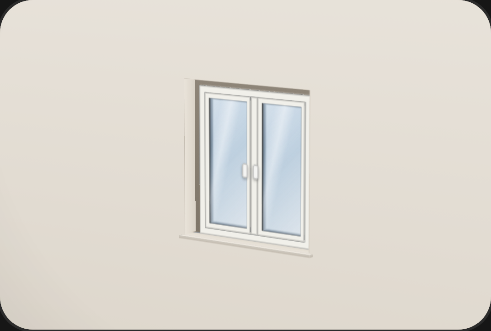
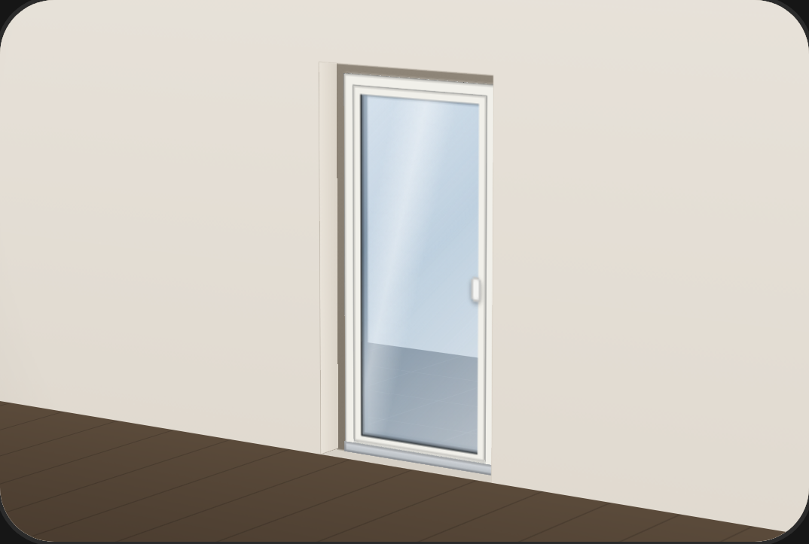
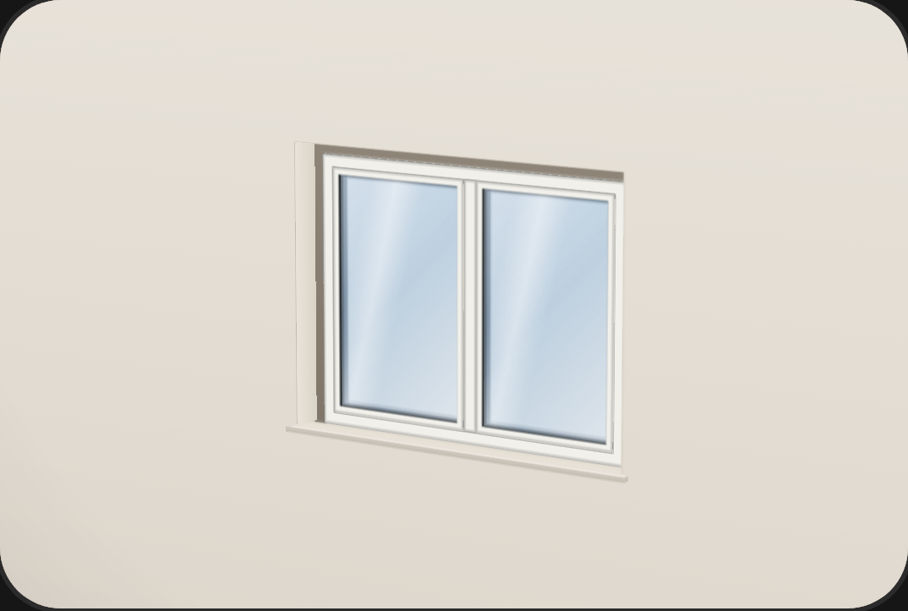
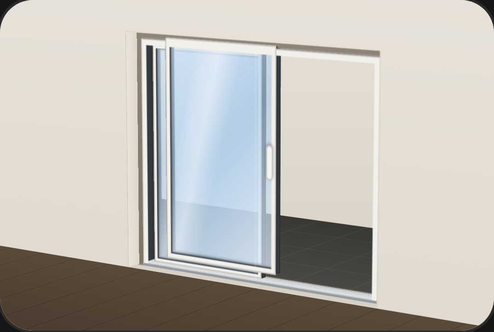
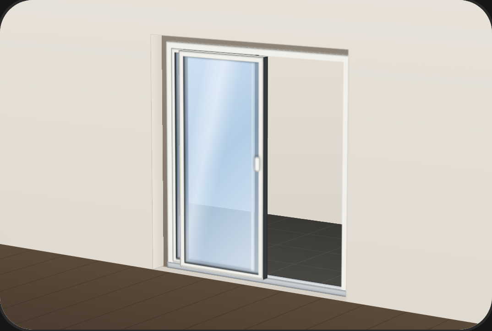
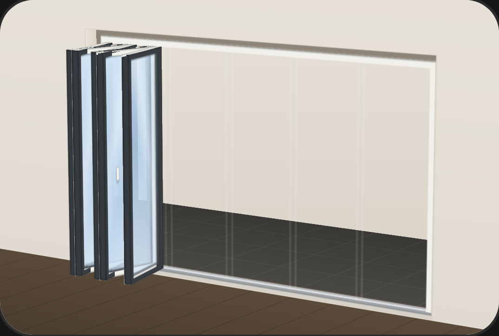

6 Elementarten
Auch ganz
groß.
Jede Art hat ihr eigenes 3-D-Modell
und eigene Fragen, bis zur Schwelle.
- HST-Schema A, C, D
- PSK 2- oder 3-teilig
- Faltwand bis 7 Flügel
- Schwelle barrierefrei





